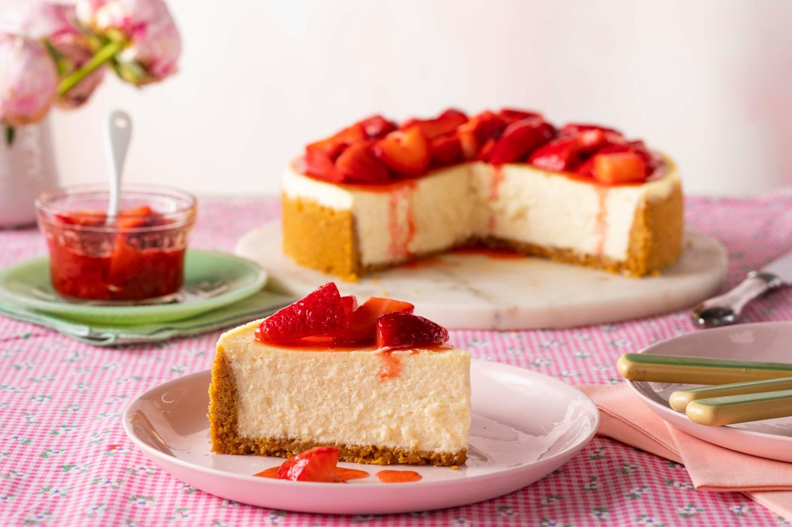

Cheesecake Recipe

Cheesecake is a sweet dessert consisting of one or more layers. The main,
and thickest, layer consists of a mixture of a soft, fresh cheese, eggs,
and sugar. If there is a bottom layer, it most often consists of a crust or
base made from crushed cookies, graham crackers, pastry, or sometimes sponge cake.
Ingredients
Crust:
- 6 tablespoons unsalted butter
- 1 1/2 cups graham cracker crumbs
- 2 tablespoons granulated sugar
- Pinch fine salt
Filling:
- 2 pounds cream cheese, at room temperature
- 1 1/4 cups granulated sugar
- 1 1/4 cups sour cream
- 6 large eggs, lightly beaten
- 1 tablespoon vanilla paste or extract
- 1 teaspoon finely grated lemon zest
- 1 teaspoon finely grated orange zest
Topping:
- 3/4 cup sour cream
- 1/2 cup confectioners' sugar
- 1/4 teaspoon vanilla paste or extract
- Strawberries
Steps
Crust:
- Melt the butter, covered in the microwave, in a medium microwave-safe bowl, or a saucepan.
Brush a 9-inch springform pan with some of the butter.
- Stir the remaining butter together with the crumbs, sugar, and salt. Press the crumb mixture over the bottom of the pan,
taking care to get the crust evenly into the edges.
- Bake until golden brown, 15 to 18 minutes. Cool. Wrap the bottom and up the sides of the pan with foil and put in a roasting pan.
Filling:
- Beat the cream cheese on medium speed with a hand-held mixer until smooth.
- Add the granulated sugar and beat just until light and fluffy, scraping the sides of the bowl and beaters as needed.
- Slowly beat in the sour cream, then eggs, vanilla and both citrus zests.
- Pour into the cooled crust.
- Bring a medium saucepan or kettle of water to a boil. Gently place the roasting pan in the oven.
- Pour in enough hot water to come about halfway up the side of the springform pan. Bake the cheesecake for about 1 hour and 10 minutes---the outside of the cake will set but the center will still be loose.
Topping:
- Stir together the sour cream, confectioners' sugar and vanilla.
- Spread over the top of the cooked cheesecake and return to the oven for 5 minutes.
- Turn the oven off, cook the cheesecake in the residual heat in the oven for about 1 hour.